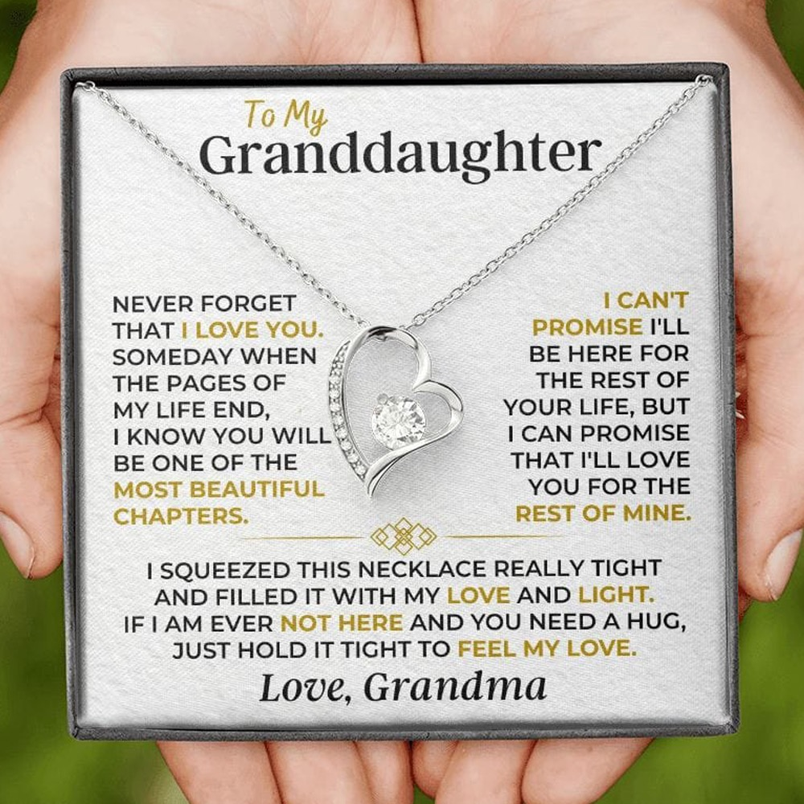
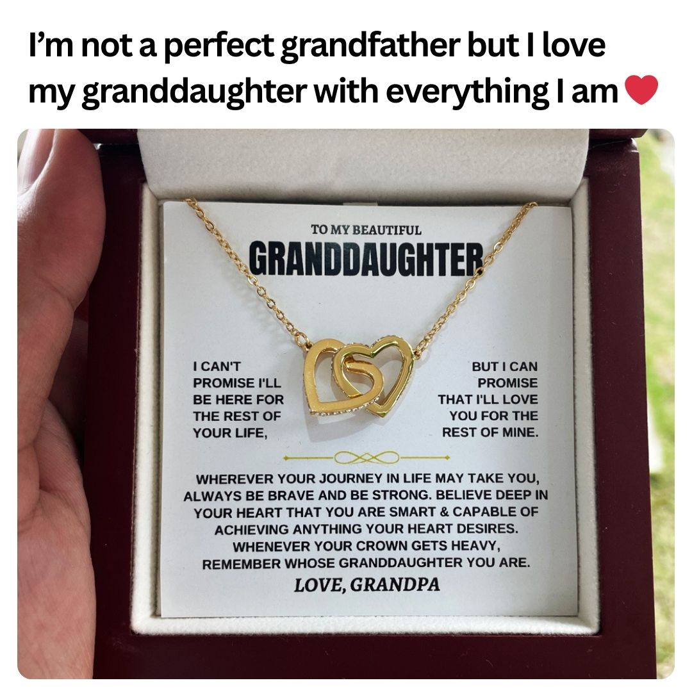
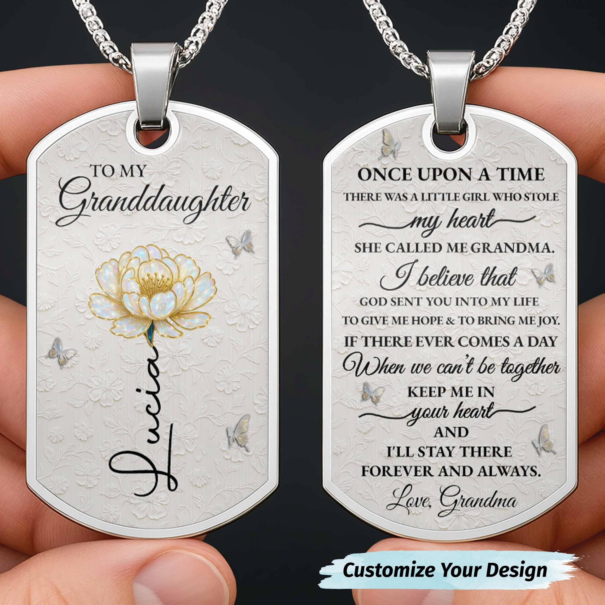
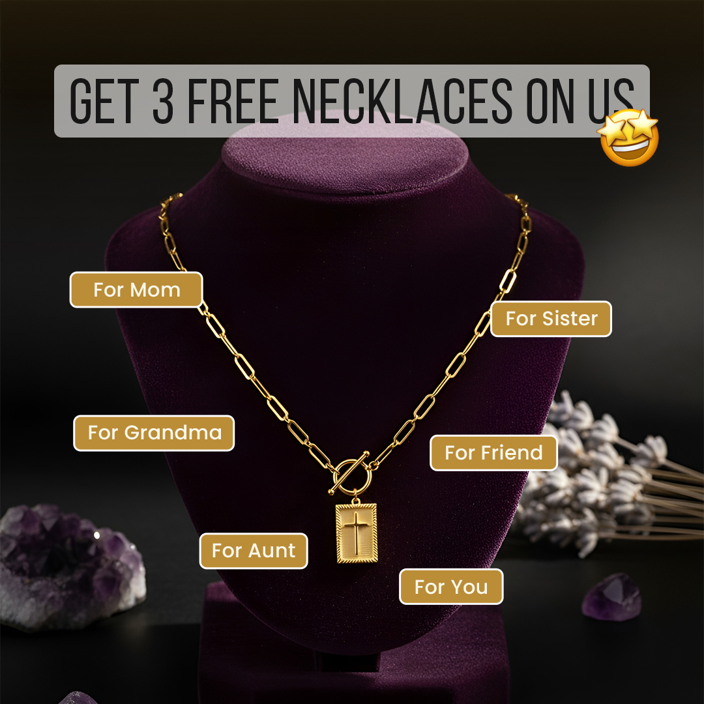
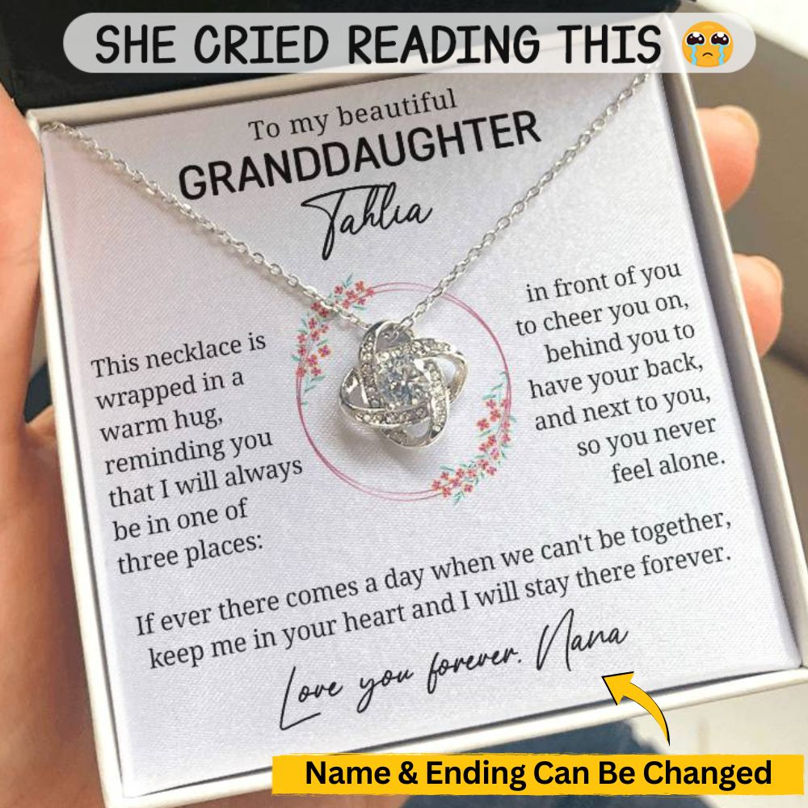
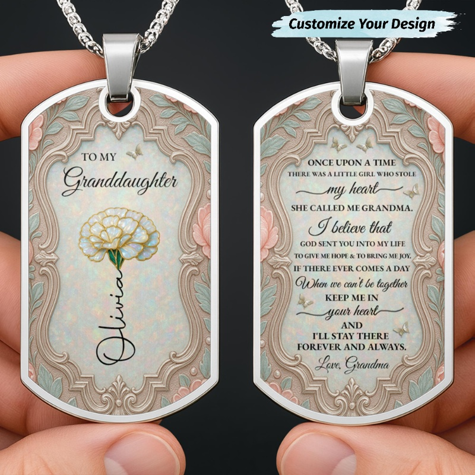

IMAGEM#1 · Sugar Spring
This says it all. 💖
Sometimes as a grandmother, it's hard to put into words how we feel. This says it all. 💖✨
1.218 dias no ar · 1 variação(ões)
Vendem a mensagem, não a joia: a foto é o cartão "To My Granddaughter... Love, Grandma" dentro da caixa. É imagem estática, barata de fazer. A fé aparece em 6 dos 10 ("God sent you into my life", cruz), e a oferta fica em segundo plano.
| Loja | Ativos | Longevidade máx. (dias no ar) | Duplicação | Veredito | Link |
|---|---|---|---|---|---|
| Sugar Spring | 40 | 1.218 dias (desde 12/06/2023) | ~1,8x (testa mensagem, quase não duplica) | MODELAR | Biblioteca ↗ |
| Worth Is You | 47 | 121 dias (desde 12/06/2026) | ~3,6x | MODELAR | Biblioteca ↗ |
| Wavao | 176 | 60 dias (desde 12/08/2026) | ~4x | MODELAR | Biblioteca ↗ |
| Lainly | 447 | 387 dias (desde 18/09/2025) | ~50x na amostra | MODELAR | Biblioteca ↗ |
| Lunavere | 190 | 103 dias (desde 30/06/2026) | ~10x | MODELAR | Biblioteca ↗ |
8 e 7 marcas: a relação avó-neta é o centro do mercado de presente. · fonte: cruzamento de 82 anúncios (swipe.js)
6 e 5 marcas: um lembrete diário de quem deu. · fonte: cruzamento de 82 anúncios (swipe.js)
4 marcas cada: a cena da reação de quem recebe. · fonte: cruzamento de 82 anúncios (swipe.js)
5 marcas: a cruz entra no presente de família. · fonte: cruzamento de 82 anúncios (swipe.js)
4 marcas: resposta ao medo de esverdear. · fonte: cruzamento de 82 anúncios (swipe.js)
Viole Grace: anúncio de Natal com 327 dias ("After years of Christmas gifts she never wore...") e de Páscoa. · fonte: cruzamento de 82 anúncios (swipe.js)
Ordenados por dias no ar. Inclui lojas de presente sem fé (Sugar Spring, Inifis, Alma Gems), porque é delas o formato que a sua loja vai usar.

IMAGEMSometimes as a grandmother, it's hard to put into words how we feel. This says it all. 💖✨
Que alguém mantém este anúncio no ar há 1.218 dias.
Quanto vende, quanto gasta ou se dá lucro.

IMAGEMThis keepsake will mean so much more to her, wherever she goes in life and no matter how old she gets 💞 👉 https://sugarspring.co/grand117gd
Que alguém mantém este anúncio no ar há 409 dias.
Quanto vende, quanto gasta ou se dá lucro.

IMAGEMBeautiful Flower Necklace for Granddaughter 🌸 Customize Yours 👉 https://almagems.com/products/GDT389_DTNECK Worldwide shipping 🌍 #AlmaGems #Necklace #Granddaughter #Birthday #Graduation #PersonalizedGifts #CustomJewelry #FamilyLove
Que alguém mantém este anúncio no ar há 385 dias.
Quanto vende, quanto gasta ou se dá lucro.
 IMAGEM
IMAGEM💝 Looking for a meaningful gift to show your granddaughter just how much she means to you? Adorned with premium cubic zirconia crystals, this elegant pendant comes with a heartfelt "personalized" message card, reminding her that you'll always be there for her, no matter what. Click now to give her a gift she'll cherish forever and keep your love close to her heart ✨
Que alguém mantém este anúncio no ar há 367 dias.
Quanto vende, quanto gasta ou se dá lucro.
After years of Christmas gifts she never wore, this one changed everything. Every Christmas, same story. I'd spend hours trying to find something she'd actually like. Something meaningful. Years of trying. Different gifts every time. Always that same polite "thanks mom." I don't think she ever wore any of them. Then I saw these pearl cross necklaces on Instagram. And honestly, what caught me wasn't the necklace itself. It was a comment I read. "I got matching ones for me and my daughter. We both wear them every day." And something just clicked. What if we matched? What if instead of giving her something and hoping she'd like it, we BOTH wore the same thing? Because here's the thing. Every gift I'd ever given her was one-way. Here's something FOR YOU. But if we matched? It's not a gift. It's something we share. There's no pressure on her because I'm wearing it too. That felt different. I checked the reviews, women wearing theirs over a year, still perfect. And they have a lifetime warranty. If it ever tarnishes, they replace it for free. So I ordered them right away. Viole Grace was running buy one get one free for Christmas. One for me, one for her. When they arrived, the pearls with the gold looked even better in person. I put mine on right away and wore it every day for two weeks before Christmas. I wanted to test it before I gave her hers. Showered in it, worked out in it, slept in it. Still looked brand new. Christmas morning, I gave her the box. But I was also wearing mine. She opened it. Looked at the necklace. Then she looked up at me. And saw I was wearing the exact same one. "Wait, we match mom?" "We do," I said. She put it on right there over her pajamas and hugged me. That was four months ago. She wears it every single day. And honestly, I don't know if it's the cross, or the fact that it actually doesn't tarnish and is waterproof so she can wear it 24/7, or just the matching thing. But it worked. Viole Grace has buy one get one free again for Christmas. One for you, one for her. Last year they sold out pretty fast, so I wanted to share it while it's still available. https://violegrace.com/products/the-eternal-pearl-necklace-bogo
Que alguém mantém este anúncio no ar há 328 dias.
Quanto vende, quanto gasta ou se dá lucro.

IMAGEMElevate your faith & style with The Eternal Pendant Necklace. This elegant, waterproof necklace adds a touch of symbolic beauty and subtle sparkle to any outfit, handmade for everyday wear you can cherish. 💎 Hypoallergenic, nickel‑free & lead‑free, safe for sensitive skin ✨ Waterproof & tarnish‑resistant finish, designed to last 👂 Lightweight and comfortable for all‑day wear 🎁 Makes a thoughtful gift symbolizing faith, hope, and strength
Que alguém mantém este anúncio no ar há 317 dias.
Quanto vende, quanto gasta ou se dá lucro.

IMAGEM💝 Looking for a meaningful gift to show your granddaughter just how much she means to you? Adorned with premium cubic zirconia crystals, this elegant pendant comes with a heartfelt "personalized" message card, reminding her that you'll always be there for her, no matter what. Click now to give her a gift she'll cherish forever and keep your love close to her heart ✨
Que alguém mantém este anúncio no ar há 230 dias.
Quanto vende, quanto gasta ou se dá lucro.
A stranger on a plane saw me holding my cross at 30,000 feet and said four words that broke me open in the middle of the night. 11:45 PM. Gate B7. The flight to Charlotte is already boarding and I'm the last one in line. I hate flying at night. I hate flying alone even more. But dad had another fall and mom can't do this by herself anymore, so here I am, boarding a red-eye with a carry-on and a knot in my stomach that won't go away. I found my seat. Middle row. The woman by the window is already asleep. I buckle in, put my bag under the seat, and my hand goes right where it always goes. My cross. I've been doing that for months now. Every time the anxiety hits, every time the phone rings and my heart drops, my fingers find this little pearl cross and I just hold it. I don't even think about it anymore. It's just what my body does when it needs something solid. The cabin lights go off. I can't sleep. I'm sitting there in the dark holding my necklace, running the pearls between my fingers, praying the same prayer I've been praying since September. Just let him be okay. Just one more good day. Around 2 AM the woman in the aisle seat turns to me. I didn't even realize she was awake. She looks at my hand on my chest and says quietly, "My daughter has the same one." I don't know what to say so I just nod. "She wore hers through my husband's chemo. Never took it off. Not once." "She said it was the only thing that made her feel like God was still in the room." And I just lost it. Right there in seat 14C in the dark at 30,000 feet with a stranger who somehow knew exactly what I was going through without me saying a single word. We talked for the rest of the flight. She told me about her husband, I told her about my dad. She showed me a photo of her daughter. We cried. We laughed. We prayed together right there in the middle row of a plane full of sleeping strangers. When we landed she hugged me at the gate and said, "That necklace found you for a reason." That was six weeks ago. I've worn it every single day since. Showers. Hospital visits. Late night drives to my parents' house. It still looks exactly the same as the day I put it on. Not a single tarnish mark. Not one sign of wear. It comes with a lifetime color warranty. If it ever loses its color they replace it. I haven't needed it. I don't know how to explain what this necklace means to me without sounding like I'm exaggerating. But I'm not. It's not just jewelry. It's the thing I hold onto when I can't hold onto anything else. Some things are meant to last through everything. Viole Grace Pearl Cross Necklace. Lifetime warranty. Built for real life. I just saw they're doing 60% off. I don't know when it ends but that's the price I paid and I'd pay double knowing what I know now. https://violegrace.com/products/the-eternal-pearl-necklace
Que alguém mantém este anúncio no ar há 174 dias.
Quanto vende, quanto gasta ou se dá lucro.
 VÍDEO
VÍDEOCustom birth flower dogtag necklace for my sweet angel 🌸 Customize Yours 👉 https://almagems.com/products/GDT557_DTNECK Worldwide shipping 🌍 #AlmaGems #Necklace #Granddaughter #BirthdayGift #GiftForGranddaughter #PersonalizedJewelry #BirthFlower
Que alguém mantém este anúncio no ar há 136 dias.
Quanto vende, quanto gasta ou se dá lucro.

VÍDEOCustom birth flower name necklace for sweet granddaughter 🌸 Customize Yours 👉 https://almagems.com/products/GDT557_DTNECK Worldwide shipping 🌍 #AlmaGems #Necklace #Granddaughter #BirthdayGift #GiftForGranddaughter #PersonalizedJewelry #LimitedEdition
Que alguém mantém este anúncio no ar há 135 dias.
Quanto vende, quanto gasta ou se dá lucro.
Decodificação feita por leitura visual de cada criativo e da copy real do anúncio.
| Produto visível | Colar pingente de coração prateado com zircônia central, preso a um cartão de mensagem dentro de caixa cinza aberta, segurada por duas mãos (fundo verde desfocado). Cartão: sim. Caixa: sim. |
| Texto do cartão | To My Granddaughter / NEVER FORGET THAT I LOVE YOU. SOMEDAY WHEN THE PAGES OF MY LIFE END, I KNOW YOU WILL BE ONE OF THE MOST BEAUTIFUL CHAPTERS. / I CAN'T PROMISE I'LL BE HERE FOR THE REST OF YOUR LIFE, BUT I CAN PROMISE THAT I'LL LOVE YOU FOR THE REST OF MINE. / I SQUEEZED THIS NECKLACE REALLY TIGHT AND FILLED IT WITH MY LOVE AND LIGHT. IF I AM EVER NOT HERE AND YOU NEED A HUG, JUST HOLD IT TIGHT TO FEEL MY LOVE. / Love, Grandma |
| Quem → quem | avó→neta |
| Fé | nenhum |
| Big idea | O cartão diz o que a avó não consegue dizer em palavras; o colar é o veículo da mensagem. |
| Gancho | Title 'This says it all. 💖' + copy 'Sometimes as a grandmother, it's hard to put into words how we feel.' |
| Ângulo | Emocional / legado e finitude ('quando eu não estiver aqui, segure o colar'). |
| Objeção | 'Não sei o que dizer/escrever', a mensagem pronta resolve. |
| Texto na tela | nenhum (só o texto do cartão) |
| Produto visível | Colar dourado de dois corações entrelaçados com zircônias, sobre cartão de mensagem em caixa de madeira/vinho estilo luxo aberta, segurada na mão (foto amadora, ao ar livre). Cartão: sim. Caixa: sim. |
| Texto do cartão | TO MY BEAUTIFUL GRANDDAUGHTER / I CAN'T PROMISE I'LL BE HERE FOR THE REST OF YOUR LIFE, BUT I CAN PROMISE THAT I'LL LOVE YOU FOR THE REST OF MINE. / WHEREVER YOUR JOURNEY IN LIFE MAY TAKE YOU, ALWAYS BE BRAVE AND BE STRONG. BELIEVE DEEP IN YOUR HEART THAT YOU ARE SMART & CAPABLE OF ACHIEVING ANYTHING YOUR HEART DESIRES. WHENEVER YOUR CROWN GETS HEAVY, REMEMBER WHOSE GRANDDAUGHTER YOU ARE. / LOVE, GRANDPA |
| Quem → quem | avô→neta |
| Fé | nenhum |
| Big idea | Avô imperfeito, amor total: o presente traduz o amor de um homem que não se expressa bem. |
| Gancho | Frase-meme no topo 'I'm not a perfect grandfather but I love my granddaughter with everything I am'. |
| Ângulo | Identidade do comprador (avô) + keepsake para a vida toda ('no matter how old she gets'). |
| Objeção | 'Ela vai crescer e deixar de usar', copy promete significado 'wherever she goes in life and no matter how old she gets'. |
| Texto na tela | I'm not a perfect grandfather but I love my granddaughter with everything I am ❤️ |
| Produto visível | Plaquinha estilo dog tag em aço com estampa floral, frente (flor do mês + nome 'Lucia') e verso (mensagem), seguradas pelos dedos sobre fundo preto. Mensagem impressa na própria peça; sem cartão separado nem caixa. |
| Texto do cartão | Gravado na peça (sem cartão): frente 'TO MY Granddaughter' + nome 'Lucia'; verso 'ONCE UPON A TIME THERE WAS A LITTLE GIRL WHO STOLE my heart SHE CALLED ME GRANDMA. I believe that GOD SENT YOU INTO MY LIFE TO GIVE ME HOPE & TO BRING ME JOY. IF THERE EVER COMES A DAY When we can't be together KEEP ME IN your heart AND I'LL STAY THERE FOREVER AND ALWAYS. Love, Grandma' |
| Quem → quem | avó→neta |
| Fé | 'God' (GOD SENT YOU INTO MY LIFE) no verso da peça |
| Big idea | Joia personalizada com flor do mês de nascimento + nome da neta + mensagem da avó. |
| Gancho | Title 'Customizable Flower Necklace for Your Granddaughter! 🌸 | Pick Her Birth Month Flower!' |
| Ângulo | Personalização (nome + flor do mês) + ocasiões (aniversário, formatura). |
| Objeção | 'Presente genérico', personalização; 'entrega fora dos EUA', 'Worldwide shipping'. |
| Texto na tela | Customize Your Design |
| Produto visível | Colar Love Knot prateado com zircônias sobre cartão de mensagem com moldura floral, em caixa branca aberta segurada na mão. Cartão: sim (personalizado com nome). Caixa: sim. |
| Texto do cartão | To my beautiful GRANDDAUGHTER Tahlia / This necklace is wrapped in a warm hug, reminding you that I will always be in one of three places: in front of you to cheer you on, behind you to have your back, and next to you, so you never feel alone. / If ever there comes a day when we can't be together, keep me in your heart and I will stay there forever. / Love you forever. Nana |
| Quem → quem | avó (Nana)→neta |
| Fé | nenhum |
| Big idea | Presente que faz chorar: a reação emocional da neta é a prova. |
| Gancho | 'SHE CRIED READING THIS 😢' + title '45% OFF TODAY' |
| Ângulo | Emoção/reação + personalização (nome e assinatura) + desconto. |
| Objeção | 'Não serve para minha família', nome e assinatura (Nana/Grandma etc.) podem ser trocados; preço, 45% OFF. |
| Texto na tela | SHE CRIED READING THIS 😢 / Name & Ending Can Be Changed |
| Produto visível | Nenhum produto visível: foto P&B em silhueta de duas mulheres (mãe e filha) de mãos dadas contra o sol. Sem cartão, sem caixa. |
| Texto do cartão | sem cartão |
| Quem → quem | mãe→filha (colares combinando, um para cada) |
| Fé | cruz (colar de cruz com pérolas citado na copy; não aparece na imagem) |
| Big idea | Não é um presente, é algo que vocês compartilham: colar de cruz combinando mãe e filha. |
| Gancho | 'After years of Christmas gifts she never wore, this one changed everything.' |
| Ângulo | Storytelling em 1ª pessoa (advertorial/depoimento longo) + BOGO de Natal + durabilidade. |
| Objeção | 'Ela não vai usar' (matching tira a pressão); 'vai escurecer' (testei 2 semanas no banho/academia, à prova d'água, garantia vitalícia de cor); preço (compre 1 leve 2). |
| Texto na tela | nenhum |
| Produto visível | Colar dourado de elos retangulares com fecho toggle e pingente retangular com cruz, em busto de veludo roxo, com ametistas e lavanda de cenário. Sem cartão, sem caixa. |
| Texto do cartão | sem cartão |
| Quem → quem | múltiplos: para mãe, irmã, avó, amiga, tia ou para si mesma |
| Fé | cruz (pingente) + copy 'Elevate your faith', 'faith, hope, and strength' |
| Big idea | Um colar de fé para todas as mulheres da sua vida, e 3 grátis. |
| Gancho | 'GET 3 FREE NECKLACES ON US' + title 'Lifetime Color Warranty✨' |
| Ângulo | Oferta (leve grátis) + multi-destinatário + fé/estilo + qualidade do material. |
| Objeção | Alergia (hipoalergênico, sem níquel/chumbo), escurecimento (à prova d'água, garantia vitalícia de cor), preço (3 grátis). |
| Texto na tela | GET 3 FREE NECKLACES ON US 🤩 / For Mom / For Sister / For Grandma / For Friend / For Aunt / For You |
Nos 10 mais longevos: 4 cartão + caixa (flat lay), 4 still de produto, 1 lifestyle, 1 UGC/depoimento, 0 demonstração, 0 text-heavy. Religioso: 6 de 10 têm algum elemento religioso (#3, #9, #10: 'God sent you into my life' gravado na peça; #6: pingente de cruz + 'faith'; #5 e #8: colar de cruz e oração/God na copy). 4 de 10 não têm nenhum (#1, #2, #4, #7, os cartões clássicos 'To My Granddaughter' da Sugar Spring e Inifis). Obs.: há duplicatas, #4 = #7 (mesma imagem) e #9 ≈ #10 (mesma capa).. O padrão dominante é o 'cartão de mensagem como produto': colar simples (coração, love knot, dog tag) servindo de suporte para um texto emocional 'To My Granddaughter... Love, Grandma/Grandpa/Nana', fotografado na mão dentro da caixa ou com a mensagem gravada na própria peça, 8 de 10 vendem a mensagem, não a joia, quase sempre avó/avô→neta, com temas de finitude ('quando eu não estiver aqui') e personalização de nome. O religioso aparece de forma sutil (uma linha 'God sent you' na mensagem) ou como produto (cruz da Viole Grace), e a Viole Grace foge do formato com advertoriais longos em 1ª pessoa sobre imagens sem produto, focando objeções de durabilidade (garantia vitalícia de cor) e ofertas BOGO/grátis. No total dos 82 anúncios de presente: 41 vídeos, 32 imagens, 7 dinâmicos; nenhum marcado como gerado por IA.
| Formato | Roteiro | Uso no seu plano |
|---|---|---|
| Cartão + caixa (foto de cima) | cartão legível "To My Granddaughter" + cruz presa + caixa aberta; título "This says it all" | anúncio 1 (o molde de 1.218 dias) |
| Reação de quem recebe | foto ou vídeo curto da neta abrindo e abraçando a avó; título "She hugged me and didn't let go" | anúncio 2 (ângulo emoção) |
| Data | cartão + luzes de Natal; "Order by Dec 10 for Christmas" | anúncio 3 (urgência da data) |